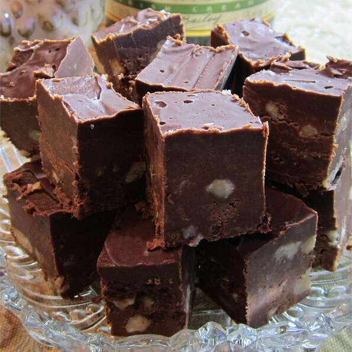

Irish Cream Truffle Fudge

Description
The sweet-tart burst of ripe, juicy strawberries stirred into sweet, frozen cream is a summer pleasure unlike any other. It's light and refreshing and tastes like summer on a spoon.
Ingredients
- 3 cups semisweet chocolate chips
- 1 cup white chocolate chips
- 1/4 cup butter
- 3 cups confectioner's sugar
- 1 cup Irish cream liqueur
- 1 1/2 cups chopped nuts
- 1 cup semisweet chocolate chips
- 1/2 cup white chocolate chips
- 4 tablespoons Irish cream liqueur
- 2 tablespoons butter
Steps
- Butter a 8x8 inch pan.
- In the top half of a double boiler melt the 3 cups semisweet chocolate chips, 1 cup white chocolate chips and 1/4 cup butter until soft enough to stir.
- Stir in the confectioner's sugar and Irish cream until mixture is smooth. Stir in nuts. Place mixture in the prepared pan and lay a sheet of plastic wrap over top; press and smooth top down.
- In the top half of a double boiler melt remaining chocolates until soft. Remove from heat and with a fork beat in the butter and Irish cream until smooth. Spread topping over cooled fudge with a knife. If a smooth top is important place plastic wrap over the top. Refrigerate until firm, 1 to 2 hours at least. This fudge can be easily frozen.
Nutrition Facts
Per Serving: 383 calories; protein 3.5g; carbohydrates 46.8g; fat 20.3g; cholesterol 10mg; sodium 37.4mg.
Return to Recipes Page